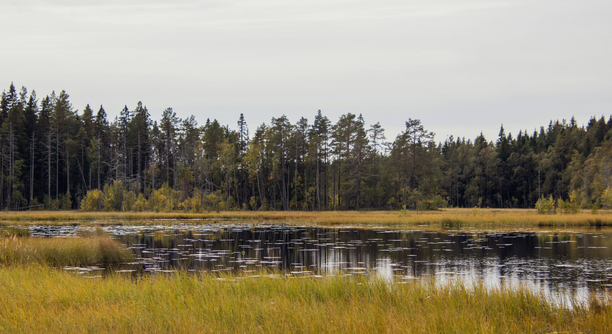

DEN MYLLRANDE VÅTMARKEN
Vi har dikat ut nästan alla våtmarker i Sveriges slättlandskap. Nu läcker de dränerade torvmarkerna omkring 11 miljoner ton koldioxidekvivalenter varje år – mer än hela den svenska personbilstrafiken.

Industrins pris i norr
Norrbotten är den region som förlorar överlägset mest våtmark. Det beror framförallt på stora industrisatsningar och utvinning av råvaror. När enorma naturområden delas upp i mindre bitar försvinner viktiga hem för många djurarter. Forskning visar att stora, sammanhängande våtmarker är helt nödvändiga för att bevara ett rik djurliv. Därför blir det lokala byggandet i norr ett problem för hela Sveriges mål att skydda och bevara naturen.
Källor
Petrov, D., Garcia, E., & Moreau, E. (2024). Conservation importance of wetlands for faunal diversity. Zoological Records.
Sveriges miljömål. (2025). Myllrande våtmarker.
Data
Statistiska centralbyrån (SCB) – Exploaterad våtmark efter region och typ av exploatering, i hektar. År 2020 - 2024
Trovärdighet: SCB framställer Sveriges officiella statliga statistik. Datan är politiskt oberoende och insamlad med rigorösa vetenskapliga metoder, vilket garanterar att vår analys bygger på objektiva fakta snarare än uppskattningar.
Vägarna som osynliga barriärer
Vägbyggen är den överlägset största anledningen till att våtmarker försvinner. Problemet är inte bara själva ytan som täcks med asfalt. Vägar fungerar som fysiska hinder som skär rakt igenom naturen och stoppar vattnets naturliga flöde. Detta torkar ut marken runtomkring och förstör våtmarkens förmåga att rena vatten och skydda mot översvämningar. Resultatet blir en natur som har mycket svårare att stå emot klimatförändringar och extremväder.
Källor
Trafikverket. (2023). Våtmarker – slutrapport inklusive bilagor.
Waly & Mickovski. (2022). Wetlands for climate adaptation and societal benefits.
Data
Statistiska centralbyrån (SCB) – Exploaterad våtmark efter region och typ av exploatering, i hektar. År 2020 - 2024
Trovärdighet: SCB framställer Sveriges officiella statliga statistik. Datan är politiskt oberoende och insamlad med rigorösa vetenskapliga metoder, vilket garanterar att vår analys bygger på objektiva fakta snarare än uppskattningar.
En förlorad klimatsköld
Datan från 2020 till 2024 visar att vi förstör allt mer våtmark för varje år som går. Även om grafen bara visar en kort period, pekar den på ett långsiktigt fel i hur vi bygger vårt samhälle. Friska våtmarker fungerar nämligen som enorma tvättsvampar som suger upp och lagrar koldioxid. Men när vi dikar ur och bygger på them, vänds effekten och marken börjar i stället läcka ut stora mängder växthusgaser. Den stadiga ökningen i grafen visar att dagens regler helt enkelt inte räcker för att skydda naturen.
Källor
Davidsson, T. (2022). Wetlands and climate change. MDPI.
Naturvårdsverket. (u.å.). Våtmarker och klimat.
Data
Statistiska centralbyrån (SCB) – Exploaterad våtmark efter region och typ av exploatering, i hektar. År 2020 - 2024
Trovärdighet: SCB framställer Sveriges officiella statliga statistik. Datan är politiskt oberoende och insamlad med rigorösa vetenskapliga metoder, vilket garanterar att vår analys bygger på objektiva fakta snarare än uppskattningar.
Glesbygden tar smällen för hela landet
Om vi jämför hur mycket mark som förstörs med hur många som bor i en region, syns en tydlig obalans. Trycket på våtmarkerna är mycket högre i glesbygden. Det betyder att det inte är bygget av nya bostäder i växande städer som är det största problemet. Istället är det storskaliga projekt – som vindkraft, elnät och stora vägar – som kräver enorma ytor. Glesbygdens natur och djurliv får alltså betala priset för att lösa hela landets behov av energi och transporter.
Källor
Davidsson, T. (2022). Wetlands and climate change. MDPI.
Trafikverket. (2023). Våtmarker – slutrapport inklusive bilagor.
Data
Statistiska centralbyrån (SCB) – Exploaterad våtmark efter region och typ av exploatering, i hektar. Samt: Folkmängden efter region, civilstånd, ålder och kön. År 2020 - 2024
Trovärdighet: SCB framställer Sveriges officiella statliga statistik. Datan är politiskt oberoende och insamlad med rigorösa vetenskapliga metoder, vilket garanterar att vår analys bygger på objektiva fakta snarare än uppskattningar.